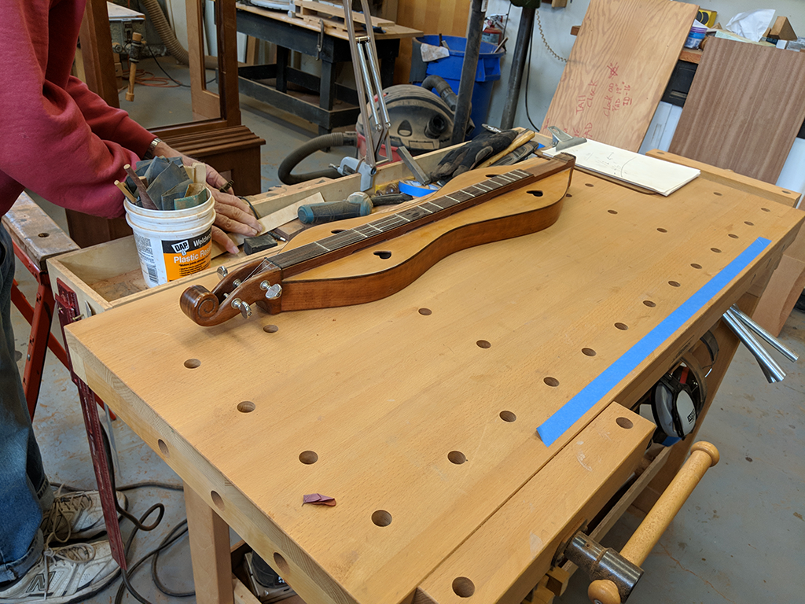
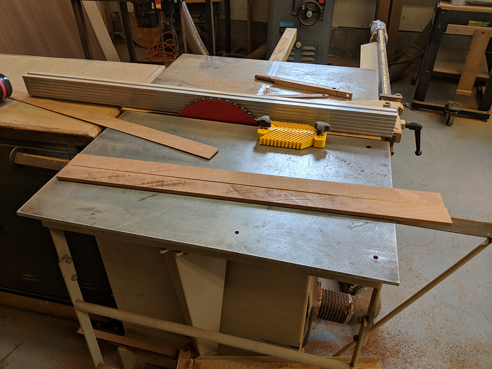
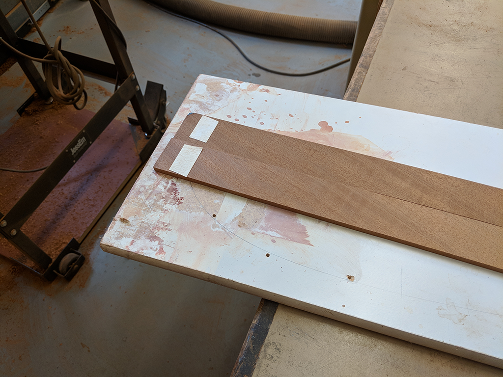
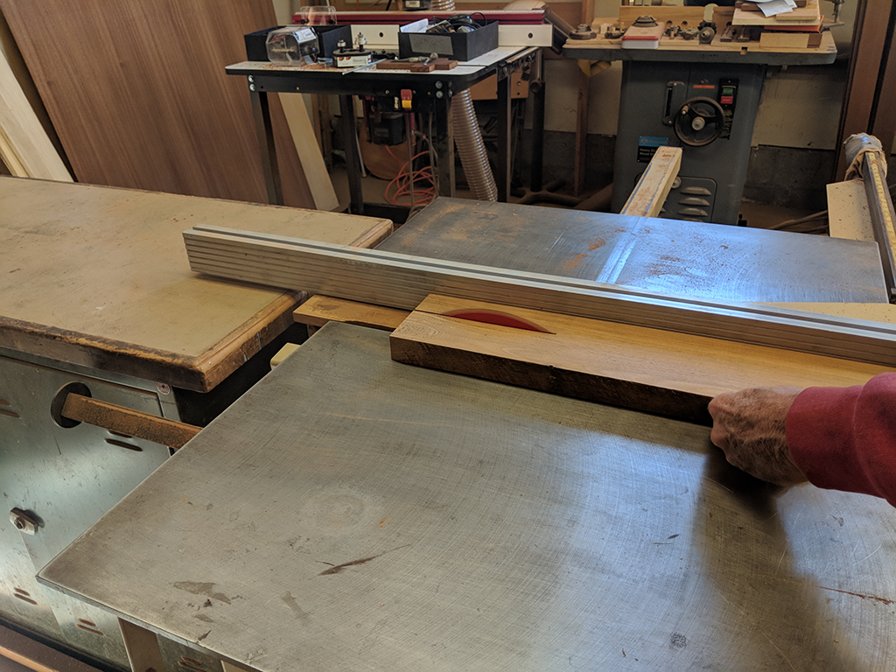

|  |  |
 |
|---|---|---|
|  |  |
 |
Update 1: Finding a Feeling for the Project
By Mark on February 8, 2018
I started the build process last week in Father Martin's workshop, and I love every second of our time together.
The actual wood "working" at this point is not difficult in terms of fine motor skills. I haven't had a moment where I felt like my building skills do not suffice. However, when it comes to the approach, such as how I will cut the wood or how I will achieve a certain bend, I often find myself in foreign territory or stumped.
Father Martin has been very good at posing design questions in such a way as to challenge me to find an answer. He is a master of dulcimer making, and he never hands over the answers easily. He is a great mentor due to his sea of knowledge, and I am learning a great deal from him.
What's Been Built
As I started last week, one would expect something to be done, and yes, it has. But not without setbacks. Last week, I used one of Father Martin's previous dulcimers to measure how much wood I would need for the side panels. I used tape as I cannot use the tape along the curved surface. This is depicted in image 1 and 2. I then used the table saw to cut out the side panels (2 in. by 33.5 in.) (image 3). In order to smooth out the top of each piece and thin each one down even further, I attached the panels to a white board and sanded them down (image 4). Finally, after the panels were the correct size and thickness, I steamed them for about 30 to 45 minutes (image 5) in order to make them softer and more flexible.
The next step did not go as planned. When I attempted to bend the panels into the hourglass shape of the dulcimer, one of the pieces cracked. This meant starting over for that piece: cutting, sanding, and then steaming. I now have caught back up, and have started to bend the side panels again (no breaks so far!).
While I waited for the wood to steam, I started on the fretboard of the dulcimer. This is a long, flat piece of wood that was cut in image 6. Later, I will route this piece out to reduce weight.
My goal for the next two weeks is to have the sides completely formed to the shape, have them glued together, and possibly have finished the neck.